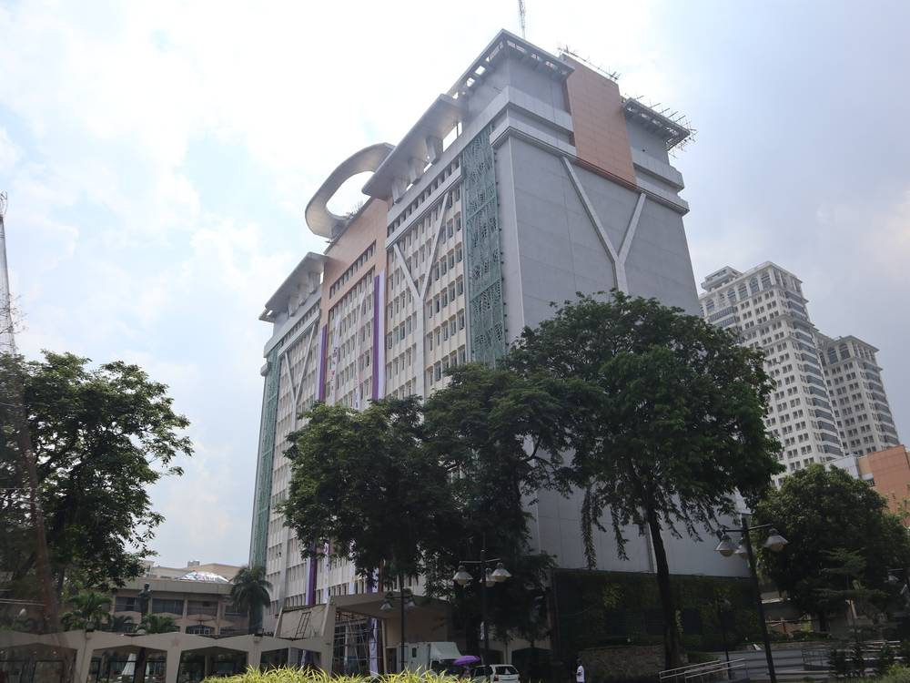

필리핀 케손시, 2년 안 돼 태양광 용량 73% 늘려 58.55MW…시청·공립학교·시립병원 지붕부터 깔았지만 가정 보급은 1%도 안 돼

싱크탱크 ICSC 위성·기계학습 분석, 95% 넘게 지붕형…지붕 잠재량 4,916MW, "가정·소상공인 초기 비용 덜어 줄 금융·인허가 필요"
필리핀 메트로마닐라의 케손시 태양광 설비 용량이 2023~2024년 약 33.85MW에서 58.55MW로 2년이 안 돼 73% 늘었다. 기후·지속가능도시연구소(ICSC)가 고해상도 위성 영상과 기계학습으로 설치 용량을 추정하는 플랫폼 '스펙트럼(SPECTRUM)'으로 분석한 결과로, 전체의 95% 넘는 55.88MW가 지붕형이며 해마다 78GWh 넘게 생산해 2025년 시 전력 소비의 최소 1.35%를 채울 수 있다. 시는 청사 단지 건물부터 태양광을 달고 공립학교와 시립병원으로 넓혔으며, 대형 쇼핑몰 등 민간 설치도 함께 늘었고 2025년 녹색건축 조례로 신축·개보수 건물에 재생에너지 기준을 매겼다. 그러나 지붕 태양광 보급률은 여전히 1%에 못 미치고, 시 전체 지붕 잠재량은 4,916MW로 추정된다. ICSC 에너지 민주주의 담당 모날리사 디말란타 선임고문은 "이제 과제는 설치비를 감당하기 어려운 가정과 소상공인까지 혜택이 넓어지게 하는 것"이라며 저렴한 금융과 간편한 인허가를 주문했다.
시민에너지 관점
케손시는 시청·학교·병원 같은 공공 지붕에서 시작해 2년 만에 용량을 73% 늘렸다는 점에서, 지자체가 먼저 움직이면 속도가 난다는 것을 보여 준다. 그러나 늘어난 용량 대부분이 쇼핑몰·대기업 몫이고 가정 보급은 1%에 못 미친다는 숫자는, 공공 주도만으로는 혜택이 시민에게 고루 가지 않는다는 경고이기도 하다. 국내 공공건물·공영주차장 태양광도 같은 길을 밟지 않으려면, 처음부터 주민 출자와 공동체 태양광 구독으로 가정이 이익에 참여하는 문을 열어 둬야 한다. 지자체는 공공 지붕 태양광 계획을 세울 때 주민 참여 몫을 목표 숫자로 함께 정해야 한다.
출처: Daily Tribune 2026-11-12 Daily Tribune 원문 보기
フィリピン・ケソン市、2年足らずで太陽光容量を73%増やし58.55MWに…市庁舎・公立学校・市立病院の屋根から設置も、家庭への普及は1%未満
シンクタンクICSCが衛星画像と機械学習で分析、95%超が屋根置き…屋根の潜在量は4,916MW、「家庭・零細事業者の初期費用を軽くする金融と許認可が必要」
フィリピン・メトロマニラのケソン市の太陽光設備容量が、2023〜2024年の約33.85MWから58.55MWへと2年足らずで73%増えた。気候・持続可能都市研究所（ICSC）が高解像度衛星画像と機械学習で設置容量を推定するプラットフォーム「SPECTRUM」で分析した結果で、全体の95%超にあたる55.88MWが屋根置き型で、年間78GWh以上を発電し、2025年の市の電力消費の少なくとも1.35%を賄える。市は庁舎敷地内の建物から太陽光を設置し公立学校や市立病院へと広げ、大型ショッピングモールなど民間の設置も増えたほか、2025年のグリーンビルディング条例で新築・改修建物に再生可能エネルギーの基準を課した。しかし屋根置き太陽光の普及率は依然1%に満たず、市全体の屋根の潜在量は4,916MWと推定される。ICSCのエネルギー民主主義担当のモナリサ・ディマランタ上級顧問は「今の課題は、設置費を負担しにくい家庭や小規模事業者にまで恩恵を広げることだ」として、手頃な金融と簡便な許認可を求めた。
市民エネルギーの視点
ケソン市が市庁舎・学校・病院といった公共の屋根から始めて2年で容量を73%増やしたことは、自治体が先に動けばスピードが出ることを示している。しかし増えた容量の大半がショッピングモールや大企業のもので、家庭への普及が1%に満たないという数字は、公共主導だけでは恩恵が市民に行き渡らないという警告でもある。韓国の公共建物・公営駐車場の太陽光が同じ道をたどらないためには、最初から住民出資やコミュニティ太陽光の購読で家庭が利益に参加できる扉を開いておく必要がある。自治体は公共屋根太陽光の計画を立てる際、住民参加の割合を目標数値として併せて定めるべきだ。
出典: Daily Tribune 2026-11-12 Daily Tribune 原文を読む
菲律宾奎松市不到两年太阳能装机增长73%至58.55MW…从市政厅、公立学校和市立医院屋顶起步，但家庭普及率不足1%
智库ICSC用卫星图像和机器学习分析，95%以上为屋顶光伏…屋顶潜力达4,916MW，"需要减轻家庭和小商户初期成本的融资与审批"
菲律宾大马尼拉奎松市的太阳能装机容量从2023—2024年的约33.85MW增至58.55MW，不到两年增长73%。这是气候与可持续城市研究所（ICSC）利用高分辨率卫星图像和机器学习估算装机容量的平台"SPECTRUM"的分析结果：其中95%以上即55.88MW为屋顶光伏，每年可发电78GWh以上，至少可满足该市2025年用电量的1.35%。市政府先在市政厅园区建筑上安装太阳能，再扩展到公立学校和市立医院，大型购物中心等民间装机也同步增加；2025年的绿色建筑条例还对新建和翻修建筑设定了可再生能源标准。但屋顶太阳能普及率仍不足1%，全市屋顶潜力估计为4,916MW。ICSC能源民主事务高级顾问莫娜丽莎·迪马兰塔表示："现在的挑战是让难以负担安装费用的家庭和小商户也能受益"，呼吁提供低成本融资和简便审批。
市民能源视角
奎松市从市政厅、学校和医院等公共屋顶起步，两年内装机增长73%，说明地方政府先行动，速度就能提上来。但新增容量大多属于购物中心和大企业、家庭普及率不足1%的数字也在警示：仅靠公共主导，收益无法平均惠及市民。韩国公共建筑和公共停车场太阳能若不想重蹈覆辙，就应从一开始通过居民出资和社区太阳能订阅为家庭打开分享收益的大门。地方政府在制定公共屋顶太阳能计划时，应同时把居民参与份额定为目标数字。
来源: Daily Tribune 2026-11-12 Daily Tribune 查看原文
Quezon City Grows Solar Capacity 73% to 58.55MW in Under Two Years, Starting With City Hall, Public Schools and City Hospitals, but Household Uptake Remains Below 1%
Think tank ICSC's satellite and machine-learning analysis finds over 95% is rooftop; with rooftop potential of 4,916MW, it calls for financing and permitting that ease upfront costs for households and small businesses
Solar capacity in Quezon City in Metro Manila has risen 73% in less than two years, from about 33.85MW in 2023–2024 to 58.55MW. The estimate comes from SPECTRUM, a platform built by the Institute for Climate and Sustainable Cities (ICSC) that uses high-resolution satellite imagery and machine learning to track installations; more than 95% of the total, 55.88MW, is on rooftops and can produce over 78GWh a year, at least 1.35% of the city's 2025 electricity use. The city began with buildings in its own hall compound and extended solar to public schools and city-run hospitals, while installations at large malls and other private sites also grew, and its 2025 Green Building Code set renewable energy requirements for new and renovated buildings. Yet rooftop solar adoption is still below 1%, against an estimated citywide rooftop potential of 4,916MW. Monalisa Dimalanta, ICSC's senior adviser on energy literacy and energy democracy, said the challenge now is to extend the benefits to households and small businesses that cannot easily bear installation costs, calling for affordable financing and simpler permitting.
Citizen Energy View
Quezon City's 73% jump in two years, starting from public roofs such as city hall, schools and hospitals, shows how fast things move when local government acts first. But the fact that most new capacity belongs to malls and large firms while household uptake is under 1% is also a warning that public leadership alone does not spread the benefits to citizens. If Korea's solar on public buildings and car parks is not to repeat that pattern, it must open the door from the start for households to share in the returns through resident investment and community solar subscriptions. Local governments should set a target share for resident participation whenever they plan solar on public roofs.
Source: Daily Tribune 2026-11-12 Daily Tribune Read the original